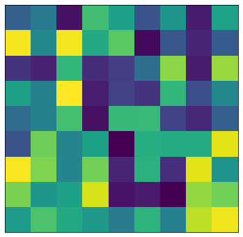
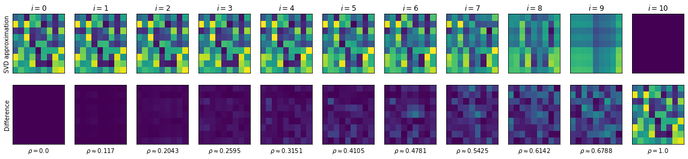

16. Relations as Matrices¶
See also the slides that summarize a portion of this content.
Thanks to Jeff Leader’s chapter on Linear Algebra in Data Science for Mathematicians for the ideas and example described in this chapter.
16.1. Using matrices for relations other than networks¶
In chapter 15 of the notes, we discussed two ways to store network data. We talked about a table of edges, which listed each connection in the network as its own row in the dataframe, and we talked about an adjacency matrix, which was a table of 0-or-1 entries indicating whether the row heading was connected to the column heading.
These same patterns can be used for data about other types of relations as well, not only networks. Recall that a network is always a relation that connects a set to itself. For instance, in the shipping network, both the row and column headings were the same set, the 50 U.S. states.
MA |
NY |
CT |
NH |
etc. |
|
|---|---|---|---|---|---|
MA |
… |
… |
… |
… |
|
NY |
… |
… |
… |
… |
|
CT |
… |
… |
… |
… |
|
NY |
… |
… |
… |
… |
|
etc. |
But we can create adjacency matrices that let us store other types of relations as well. For example, let’s imagine we were doing a shipping network for the facilities owned by a single company, including both manufacturing and retail properties. Let’s say we’re still tracking shipping, but only of newly manufactured products, which get shipped from manufacturing properties to retail properties, never the other way around. Thus our factories would be the row headings and our retail outlets the column headings.
Store 1 |
Store 2 |
Store 3 |
etc. |
|
|---|---|---|---|---|
Factory 1 |
58 |
0 |
21 |
… |
Factory 2 |
19 |
35 |
5 |
… |
Factory 3 |
80 |
0 |
119 |
… |
etc. |
… |
… |
… |
This is the format for an adjacency matrix for any kind of binary relation between any two sets. Just as when we were dealing with network data, we can choose the data type that goes in the matrix. If it is boolean (true/false or 0/1) then we are storing only whether an edge exists between the row heading and the column heading. But if we store something more detailed (like the numeric values in the example above) then we have more information; in that case, it’s measuring the quantity of materials shipped from the source to the destination.
If we think of the data stored in an edge list instead, then with networks, the two columns come from the same set (both are lists of dolphins, or both are lists of U.S. states), but when we consider any kind of relation, then the two columns can be different sets. In the example above, one column would be manufacturing locations and the other would be retail locations.
16.2. Pivoting an edge list¶
Recall from the chapter 15 notes that if you have an edge list, you can turn it into an adjacency matrix with a single pivot command. For instance, if we had the following edge list among a few factories and stores, we can create an adjacency matrix with the code shown.
import pandas as pd
edge_list = pd.DataFrame( {
'From' : [ 'Factory 1', 'Factory 2', 'Factory 2', 'Factory 3' ],
'To' : [ 'Store 1', 'Store 1', 'Store 2', 'Store 2' ]
} )
edge_list
| From | To | |
|---|---|---|
| 0 | Factory 1 | Store 1 |
| 1 | Factory 2 | Store 1 |
| 2 | Factory 2 | Store 2 |
| 3 | Factory 3 | Store 2 |
edge_list['Connected'] = 1
matrix = edge_list.pivot( index='From', columns='To', values='Connected' )
matrix.fillna( 0 )
| To | Store 1 | Store 2 |
|---|---|---|
| From | ||
| Factory 1 | 1.0 | 0.0 |
| Factory 2 | 1.0 | 1.0 |
| Factory 3 | 0.0 | 1.0 |
16.3. Recommender systems¶
Big Picture - What is a recommender system?
A recommender system is an algorithm that can recommend to a customer a product they might like. Amazon has had this feature (“Customers who bought this product also liked…”) since the early 2000s, and in the late 2000s, Netflix ran a $1,000,000 prize for creating the best movie recommender system. In such a system, the input is some knowledge about a customer’s preferences about products, and the output should be a ranked list of products to recommend to that customer. In Netflix’s case, it was movies, but it can be any set of products.
To get a feeling for how this works, we’ll do a tiny example, as if Netflix were a tiny organization with 7 movies and 6 customers. We’ll label the customers A,B,C,…,F and the movies G,H,I,…,M. To make things more concrete, we’ll use the movies Godzilla, Hamlet, Ishtar, JFK, King Kong, Lincoln, and Macbeth. (See the link at the top of this file for the original source of this example.)
We’ll assume that in this tiny movie preferences example, users indicate which movies they liked with a binary response (1 meaning they liked it, and 0 meaning they did not, which might mean disliked or didn’t watch or anything). Let’s work with the following matrix of preferences.
import pandas as pd
prefs = pd.DataFrame( {
'Godzilla' : [1,0,0,1,1,0],
'Hamlet' : [0,1,0,1,0,0],
'Ishtar' : [0,0,1,0,0,1],
'JFK' : [0,1,0,0,1,0],
'King Kong' : [1,0,1,1,0,1],
'Lincoln' : [0,1,0,0,1,0],
'Macbeth' : [0,1,0,0,0,0]
}, index=['A','B','C','D','E','F'] )
prefs
| Godzilla | Hamlet | Ishtar | JFK | King Kong | Lincoln | Macbeth | |
|---|---|---|---|---|---|---|---|
| A | 1 | 0 | 0 | 0 | 1 | 0 | 0 |
| B | 0 | 1 | 0 | 1 | 0 | 1 | 1 |
| C | 0 | 0 | 1 | 0 | 1 | 0 | 0 |
| D | 1 | 1 | 0 | 0 | 1 | 0 | 0 |
| E | 1 | 0 | 0 | 1 | 0 | 1 | 0 |
| F | 0 | 0 | 1 | 0 | 1 | 0 | 0 |
When a new user (let’s say user X) joins this tiny movie watching service, we will want to ask user X for their movie preferences, compare them to the preferences of existing users, and then use the similarities we find to recommend new movies. Of course, normally this is done on a much larger scale; this is a tiny example. (We will work with a much more realistically large example in class.)
Let’s imagine that user X joins the club and indicates that they like Godzilla, JFK, and Macbeth. We represent user X’s preferences as a Pandas series that could be another row in the preferences DataFrame, if we chose to add it.
X = pd.Series( [ 1,0,0,1,0,0,1], index=prefs.columns )
X
Godzilla 1
Hamlet 0
Ishtar 0
JFK 1
King Kong 0
Lincoln 0
Macbeth 1
dtype: int64
16.4. A tiny amount of linear algebra¶
There is an entire subject within mathematics that studies matrices and how to work with them. Perhaps you have seen matrix multiplication in another course, either outside of Bentley or in MA239 (Linear Algebra) or a small amount in MA307 (Computer Graphics). We cannot dive deeply into the mathematics of matrix operations here, but we will give a few key facts.
A pandas DataFrame is a grid of data, and when that grid contains only numbers, it can be referred to as a matrix. A single pandas Series of numbers can be referred to as a vector. These are the standard terms from linear algebra for grids and lists of numbers, respectively. Throughout the rest of this chapter, because we’ll be dealing only with numerical data, I may say “matrix” or “DataFrame” to mean the same thing, and I may say “vector” or “pandas Series” to mean the same thing.
First, a matrix can be multiplied by another matrix or vector. The important step for us here is the multiplication of the preferences matrix for all users with the preferences vector for user X. Such a multiplication is a combination of the columns in the matrix, using the vector as the weights when combining. In Python, the symbol for matrix multiplication is @, so we can do the computation as follows.
prefs @ X
A 1
B 2
C 0
D 1
E 2
F 0
dtype: int64
Notice that this is indeed a combination of the columns of the preferences matrix, but it combined only the columns for the movies user X liked. That is, you can think of the X vector as saying, “I’ll take 1 copy of the Godzilla column, plus one copy of the JFK column, plus one copy of the Macbeth column.” The result is a vector that tells us how user X compares to our existing set of users. It seems user X is most similar to users B and E, sort of similar to users A and D, and not similar to users C or F.
Again, this notion of matrix-by-vector multiplication is part of a rich subject within mathematics, and we’re only dipping our toe in here. To learn more, see the linear algebra course recommended above, MA239.
16.5. Normalizing rows¶
There is a bit of a problem, however, with the method just described. What if user A really liked movies, and clicked the “like” button very often, so that most of the first row of our matrix were ones instead of zeros? Then no matter who user X was, they would probably get ranked as at least a little bit similar to user A. In fact, everyone would. This is probably not what we want, because it means that people who click the “like” button a lot will have their preferences dominating the movie recommendations.
So instead, we will scale each row of the preferences matrix down. The standard way to do this begins by treating each one as a vector in \(n\)-dimensional space; in this case we have 7 columns, so we’re considering 7-dimensional space. (Don’t try to picture it; nobody can.) The length of any vector \((v_1,v_2,\ldots,v_n)\) is computed as \(\sqrt{v_1^2+v_2^2+\cdots+v_n^2}\), and this feature is built into numpy as the standard “linear algebra norm” for a vector.
For example, the length of user X’s vector is \(\sqrt{1^2+0^2+0^2+1^2+0^2+0^2+1^2}=\sqrt{3}\approx1.732\).
import numpy as np
np.linalg.norm( X )
1.7320508075688772
Once we have the length (or norm) of a vector, we can divide the vector by that length to ensure that the vector’s new length is 1. This makes all the vectors have the same length (or magnitude), and thus makes the preferences matrix more “fair,” because no one user gets to dominate it. If you put in more likes, then each of your overall scores is reduced so that your ratings’ magnitude matches everyone else’s.
normalized_X = X / np.linalg.norm( X )
normalized_X
Godzilla 0.57735
Hamlet 0.00000
Ishtar 0.00000
JFK 0.57735
King Kong 0.00000
Lincoln 0.00000
Macbeth 0.57735
dtype: float64
We can apply this to each row of our preferences matrix as follows.
norms_of_rows = np.linalg.norm( prefs, axis=1 )
norms_of_rows
array([1.41421356, 2. , 1.41421356, 1.73205081, 1.73205081,
1.41421356])
normalized_prefs = prefs.div( norms_of_rows, axis=0 )
normalized_prefs
| Godzilla | Hamlet | Ishtar | JFK | King Kong | Lincoln | Macbeth | |
|---|---|---|---|---|---|---|---|
| A | 0.707107 | 0.00000 | 0.000000 | 0.00000 | 0.707107 | 0.00000 | 0.0 |
| B | 0.000000 | 0.50000 | 0.000000 | 0.50000 | 0.000000 | 0.50000 | 0.5 |
| C | 0.000000 | 0.00000 | 0.707107 | 0.00000 | 0.707107 | 0.00000 | 0.0 |
| D | 0.577350 | 0.57735 | 0.000000 | 0.00000 | 0.577350 | 0.00000 | 0.0 |
| E | 0.577350 | 0.00000 | 0.000000 | 0.57735 | 0.000000 | 0.57735 | 0.0 |
| F | 0.000000 | 0.00000 | 0.707107 | 0.00000 | 0.707107 | 0.00000 | 0.0 |
So our updated similarity measurement that compares user X to all of our existing users is now the following.
normalized_prefs @ normalized_X
A 0.408248
B 0.577350
C 0.000000
D 0.333333
E 0.666667
F 0.000000
dtype: float64
We now have a clearer ranking of the users than we did before. User X is most similar to E, then B, then A, then D, without any ties.
16.6. Are we done?¶
16.6.1. We could be done now!¶
At this point, we could stop and build a very simple recommender system. We could simply suggest to user X all the movies that were rated highly by perhaps the top two on the “similar existing users” list we just generated, E and B. (We might also filter out movies that user X already indicated that they had seen and liked.) That’s a simple algorithm we could apply. It would take just a few lines of code.
liked_by_E = prefs.loc['E',:] > 0
liked_by_B = prefs.loc['B',:] > 0
liked_by_X = X > 0
# liked by E or by B but not by X:
recommend = ( liked_by_E | liked_by_B ) & ~liked_by_X
recommend
Godzilla False
Hamlet True
Ishtar False
JFK False
King Kong False
Lincoln True
Macbeth False
dtype: bool
But there’s a big missed opportunity here.
16.6.2. Why we approximate¶
Sometimes hidden in the pattern of user preferences is a general shape or structure of overall movie preferences. For instance, we can clearly see that some of the movies in our library are biographies and others are monster movies. Shouldn’t these themes somehow influence our recommendations?
Furthermore, what if there is a theme among moviegoers’ preferences that none of us as humans would notice in the data, or maybe not even have a name for, but that matters a lot to moviegoers? Perhaps there’s a set of movies that combines suspense, comedy, and excitement in just the right amounts, and doesn’t have a specific word in our vocabulary, but it hits home for many viewers, and could be detected by examining their preferences? Or maybe what a certain set of moviegoers has in common is the love of a particular director, actress, or soundtrack composer. Any of these patterns should be detectable with enough data.
Now, in the tiny 6-by-7 matrix of preferences we have here, we’re not going to create any brilliant insights of that nature. But with a very large database (like Netflix has), maybe we could. How would we go about it?
There are techniques for approximating a matrix. This may sound a little odd, because of course we have a specific matrix already (normalized_prefs) that we can use, so why bother making an approximation of it? The reason is because we’re actually trying to bring out the big themes and ignore the tiny details. We’d sort of like the computer to take a step back from the data and just squint a little until the details blur and only the big-picture patterns remain.
We’ll see an illustration of this in the next section.
16.7. The Singular Value Decomposition¶
16.7.1. Matrices as actions¶
When we speak of multiplying a matrix by a vector, as we did in prefs @ X and then later with normalized_prefs @ normalized_X, we are using the matrix not just as a piece of data, but as an action we’re using on the vector. In fact, if we think of matrix multiplication as a binary function, and we see ourselves as binding the matrix as the first argument to that function, then the result is actually a function (an action) we can take on vectors like X.
I mentioned earlier that matrix multiplication also shows up in MA307, a Bentley course on the math of computer graphics. This is because the action that results from multiplying a matrix by a vector is one that moves points through space in a way that’s useful in two- and three-dimensional computer graphics applications.
16.7.2. The SVD¶
The Singular Value Decomposition (SVD) is a way to break the action a matrix performs into three steps, each represented by a separate matrix. Breaking up a matrix \(M\) produces three matrices, traditionally called \(U\), \(\Sigma\), and \(V\), that have a very special relationship. First, multiplying \(U\Sigma V\) (or U @ Σ @ V in Python) produces the original matrix \(M\). Other than that fact, the \(U\) and \(V\) matrices are not important for us to discuss here, but the \(\Sigma\) matrix is. That matrix has zeros everywhere but along its diagonal, and the numbers on the diagonal are all positive, and in decreasing order of importance. Here is an example of what a \(\Sigma\) matrix might look like.
In fact, because the \(\Sigma\) matrix is always diagonal, computations the produce \(U\), \(\Sigma\), and \(V\), typically provide \(\Sigma\) just as a list of the entries along the diagonal, rather than providing the whole matrix that’s mostly zeros.
Let’s see what these three matrices look like for our preferences matrix above. We use the built-in NumPy routine called svd to perform the SVD.
U, Σ, V = np.linalg.svd( normalized_prefs )
Let’s ask what the shape of each resulting matrix is.
U.shape, Σ.shape, V.shape
((6, 6), (6,), (7, 7))
We see that \(U\) is \(6\times6\), \(V\) is \(7\times 7\), and \(\Sigma\) is actually just of length 6, because it contains just the diagonal entries that belong in the \(\Sigma\) matrix. These entries are called the singular values.
Σ
array([1.71057805e+00, 1.30272528e+00, 9.26401065e-01, 6.73800315e-01,
2.54172767e-01, 1.83716538e-17])
In general, if our input matrix (in this case, normalized_prefs) is \(n\times m\) in size (that is, \(n\) rows and \(m\) columns), then \(U\) will be \(n\times n\), \(V\) will be \(m\times m\), and \(\Sigma\) will be \(n\times m\), but mostly zeros. Let’s reconstruct a \(\Sigma\) matrix of the appropriate size from the singular values, then multiply U @ Σ @ V to verify that it’s the same as the original normalized_prefs matrix.
Σ_matrix = np.zeros( (6, 7) )
np.fill_diagonal( Σ_matrix, Σ )
np.round( Σ_matrix, 2 ) # rounding makes a simpler printout
array([[1.71, 0. , 0. , 0. , 0. , 0. , 0. ],
[0. , 1.3 , 0. , 0. , 0. , 0. , 0. ],
[0. , 0. , 0.93, 0. , 0. , 0. , 0. ],
[0. , 0. , 0. , 0.67, 0. , 0. , 0. ],
[0. , 0. , 0. , 0. , 0.25, 0. , 0. ],
[0. , 0. , 0. , 0. , 0. , 0. , 0. ]])
The sixth singular value is so tiny (about \(1.84\times10^{-17}\)) that it rounds to zero in the display above.
(Note: The rounding is not the approximation we’re seeking! It’s something that just makes the printout easier to read.)
np.round( U @ Σ_matrix @ V, 2 )
array([[ 0.71, -0. , 0. , -0. , 0.71, -0. , -0. ],
[ 0. , 0.5 , -0. , 0.5 , -0. , 0.5 , 0.5 ],
[-0. , -0. , 0.71, -0. , 0.71, -0. , -0. ],
[ 0.58, 0.58, 0. , 0. , 0.58, 0. , 0. ],
[ 0.58, 0. , -0. , 0.58, -0. , 0.58, 0. ],
[-0. , -0. , 0.71, -0. , 0.71, -0. , -0. ]])
if we look above at our normalized_prefs matrix, we see that this is indeed a match.
16.7.3. Creating an approximation¶
Recall that the reason we embarked upon the SVD exploration was to find a way to approximate a matrix. Because the singular values are arranged in decreasing order, you can imagine that the matrix \(U\Sigma V\) wouldn’t change very much if just the smallest of them were replaced with a zero. After all, \(1.84\times10^{-17}\) is almost zero anyway!
almost_Σ = np.copy( Σ )
almost_Σ[5] = 0
almost_Σ_matrix = np.zeros( (6, 7) )
np.fill_diagonal( almost_Σ_matrix, almost_Σ )
np.round( U @ almost_Σ_matrix @ V, 2 )
array([[ 0.71, -0. , 0. , -0. , 0.71, -0. , -0. ],
[ 0. , 0.5 , -0. , 0.5 , -0. , 0.5 , 0.5 ],
[-0. , -0. , 0.71, -0. , 0.71, -0. , -0. ],
[ 0.58, 0.58, 0. , 0. , 0.58, 0. , 0. ],
[ 0.58, 0. , -0. , 0.58, -0. , 0.58, 0. ],
[-0. , -0. , 0.71, -0. , 0.71, -0. , -0. ]])
Indeed, this looks exactly the same when we round to two decimal places. And yet, it is still an approximation to the original, because we did make a (tiny) change. What if we changed even more? Let’s replace the next-smallest singular value (the 0.25) with zero. This will be a bigger change.
almost_Σ[4] = 0
almost_Σ_matrix = np.zeros( (6, 7) )
np.fill_diagonal( almost_Σ_matrix, almost_Σ )
np.round( U @ almost_Σ_matrix @ V, 2 )
array([[ 0.72, 0.08, 0.06, 0.01, 0.65, 0.01, -0.13],
[ 0.01, 0.55, 0.03, 0.5 , -0.03, 0.5 , 0.43],
[-0. , -0.01, 0.7 , -0. , 0.71, -0. , 0.01],
[ 0.57, 0.51, -0.05, -0. , 0.62, -0. , 0.1 ],
[ 0.57, -0.04, -0.03, 0.57, 0.03, 0.57, 0.06],
[-0. , -0.01, 0.7 , -0. , 0.71, -0. , 0.01]])
Now we can start to see some small changes. Values that used to be zero are now approximately zero, such as 0.06 or -0.01. An 0.71 became 0.72, and so on. We have created a fuzzier (less precise) approximation to the original normalized_prefs matrix.
We could repeat this, removing more and more of the singular values in \(\Sigma\), until the resulting array were all zeros. Obviously that final state would be a pretty bad approximation to the original matrix! But by this method, we can choose how precise an approximation we want. Here are our options:
Remove this many singular values |
And get this kind of approximation |
|---|---|
0 (don’t remove any) |
Original matrix (not an approximation) |
1 |
Identical up to at least 2 decimals |
2 |
Fairly close, as shown above |
3 |
Less faithful |
4 |
Even less faithful |
5 |
Even worse |
6 (remove all) |
All zeros, terrible approximation |
16.7.4. Measuring the quality of the approximation¶
There is a measurement called \(\rho\) (Greek letter rho) that can let you know approximately how much of the “energy” of the original matrix is being lost with an approximation. If \(\Sigma\) is the original vector of singular values and \(z\) is the vector of those that will be replaced by zeros, then \(\rho^2\) is computed by dividing the length of \(z\) by the length of \(\Sigma\). And so \(\rho\) is the square root of that number. You can see \(\rho\) as a measurement of the error introduced by the approximation, between 0.0 and 1.0.
def ρ ( Σ, num_to_remove ):
z = Σ[-num_to_remove:]
if len( z ) == 0:
return 1.0
return np.sqrt( np.linalg.norm( z ) / np.linalg.norm( Σ ) )
ρ( Σ, 1 )
2.7386486204421176e-09
We see that \(\rho\) says the error is tiny if we replace only the last singular value with zero, because that value was almost zero anyway.
ρ( Σ, 2 )
0.32212667929693084
But the error is larger if we remove two singular values, because the second-lowest one was not already near to zero.
16.7.5. Visualizing the approximations¶
Let’s take a step back from our particular example for a moment, to consider what these SVD-based approximations look like in general. I chose a \(10\times10\) matrix of random values and plotted it as a grid of colors, shown here.

What would it look like to approximate this matrix by dropping 1, 2, 3, or more of its singular values? We can visualize all of the answers at once, and compute the \(\rho\) value for each as well.
In the picture below, we use \(i\) to denote the number of singular values we are dropping to create an approximation of the matrix. So on the top left, when \(i=0\), we have the original matrix unchanged. But on the top right, when \(i=10\), we’ve dropped all the singular values and our matrix is just all zeros, obviously containing little or no information. You can see how the matrix blurs slowly from its original form to a complete lack of structure as \(i\) increases from 1 to 10.

The bottom row shows the difference between the original matrix and the approximation. On the bottom left, because the “approximation” equals the original, the difference is a matrix of zeros, so the the picture shown is a single color. On the bottom right, because the approximation is all zeros, the difference is the original matrix! As \(i\) increases and the approximations get blurrier, the error matrix grows more distinct, and you can see how \(\rho\) grows with it, measuring its importance.
Big Picture - The SVD and approximation
The singular value decomposition of a matrix lets us know which portions of the matrix are the most structurally important. If we drop just a few of the least significant singular values, then reconstruct the matrix from what’s left, we arrive at an approximation of the original. This has many uses, one of which is the detection of patterns within a matrix of data, as in this chapter.
16.7.6. Choosing which approximation to use¶
Now that we have a sense of what SVD-based approximations do in general, let’s return to our particular example. What are the various values of \(\rho\) for the approximations we might choose to approximate the preferences matrix?
[ ρ( Σ, i ) for i in range( len(Σ)+1 ) ]
[1.0,
2.7386486204421176e-09,
0.32212667929693084,
0.5422162727569352,
0.6921213328320457,
0.8460293400488615,
1.0]
If we’re trying to keep most of the meaning of the original matrix, we’ll want to remove only 1 or 2 singular values. For this example, let’s choose to remove three, which is close to 50% of the “energy” of the original preferences matrix. (In a real application, you would perform tests on past data to measure which is the best choice, but let’s keep this example simple.)
As a refresher for how to remove the lowest 3 singular values, here’s the code all in one place.
almost_Σ = np.copy( Σ )
almost_Σ[-3:] = 0 # replace the final 3 singular values with zeros
almost_Σ_matrix = np.zeros( (6, 7) )
np.fill_diagonal( almost_Σ_matrix, almost_Σ )
approx_prefs = U @ almost_Σ_matrix @ V
np.round( approx_prefs, 2 )
array([[ 0.7 , 0.16, 0.04, -0.02, 0.66, -0.02, -0.09],
[ 0.08, 0.32, 0.09, 0.58, -0.06, 0.58, 0.34],
[-0.02, 0.05, 0.69, -0.02, 0.72, -0.02, 0.03],
[ 0.66, 0.21, 0.03, 0.1 , 0.58, 0.1 , -0.02],
[ 0.45, 0.32, -0.13, 0.45, 0.08, 0.45, 0.21],
[-0.02, 0.05, 0.69, -0.02, 0.72, -0.02, 0.03]])
Note that the rounding to two decimal places is not part of the approximation we created. We’re rounding it after the fact to make the display more readable.
If we’d like it to have the same table structure it had before, we can convert it into a DataFrame and assign row and column headers.
approx_prefs = pd.DataFrame( approx_prefs )
approx_prefs.index = prefs.index
approx_prefs.columns = prefs.columns
approx_prefs
| Godzilla | Hamlet | Ishtar | JFK | King Kong | Lincoln | Macbeth | |
|---|---|---|---|---|---|---|---|
| A | 0.696420 | 0.160650 | 0.039410 | -0.021090 | 0.662098 | -0.021090 | -0.094822 |
| B | 0.080627 | 0.318500 | 0.093488 | 0.579816 | -0.063906 | 0.579816 | 0.341795 |
| C | -0.018735 | 0.046549 | 0.687042 | -0.018883 | 0.720243 | -0.018883 | 0.033053 |
| D | 0.662668 | 0.211608 | 0.033058 | 0.097823 | 0.577728 | 0.097823 | -0.020174 |
| E | 0.453101 | 0.324129 | -0.127217 | 0.450933 | 0.081084 | 0.450933 | 0.206132 |
| F | -0.018735 | 0.046549 | 0.687042 | -0.018883 | 0.720243 | -0.018883 | 0.033053 |
16.8. Applying our approximation¶
Now we have an approximation to the user preference matrix. We hope it has brought out some of the latent relationships hiding in the data, although with an example this small, who can say? It’s unlikely, but this same technique applies much more sensibly in larger examples, one of which we’ll do in our next class meeting.
To find which users match up best, according to this approximate preference matrix, with our new user X, we do the same multiplication as before, but now with the approximate matrix.
approx_prefs @ normalized_X
A 0.335156
B 0.578642
C -0.002636
D 0.427422
E 0.640955
F -0.002636
dtype: float64
It seems that users E and B have retained the highest similarities to user X in this example. But user D has a pretty high rank as well, so let’s include them also, just for variety.
Also, rather than just listing all the movies they like and that user X doesn’t, let’s try to be smarter about that as well. Couldn’t we rank the recommendations? Let’s take the E, B, and D rows from the approximate preferences matrix and add them together to combine an aggregate preferences vector for all movies.
rows_for_similar_users = approx_prefs.loc[['E','B','D'],:]
scores = rows_for_similar_users.sum()
scores
Godzilla 1.196396
Hamlet 0.854238
Ishtar -0.000671
JFK 1.128572
King Kong 0.594907
Lincoln 1.128572
Macbeth 0.527753
dtype: float64
Now which of these movies has user X not yet indicated they like?
scores[~liked_by_X]
Hamlet 0.854238
Ishtar -0.000671
King Kong 0.594907
Lincoln 1.128572
dtype: float64
All we need to do is rank them and we have our recommendation list!
scores[~liked_by_X].sort_values( ascending=False )
Lincoln 1.128572
Hamlet 0.854238
King Kong 0.594907
Ishtar -0.000671
dtype: float64
Of course, we don’t want to recommend all of these movies; there’s even a negative score for one of them! How many recommendations are passed on to the user is a question best determined by the designers of the user experience. Perhaps in this case we’d recommend Lincoln and Hamlet.
16.9. Conclusion¶
In class, we will apply this same technique to an actual database of song recommendations from millions of users. Be sure to download and prepare the data as part of the homework assigned this week.
If you want to know more about the concepts of matrix multiplication and factorization, which were covered only extremely briefly in this chapter, consider taking MA239, Linear Algebra.